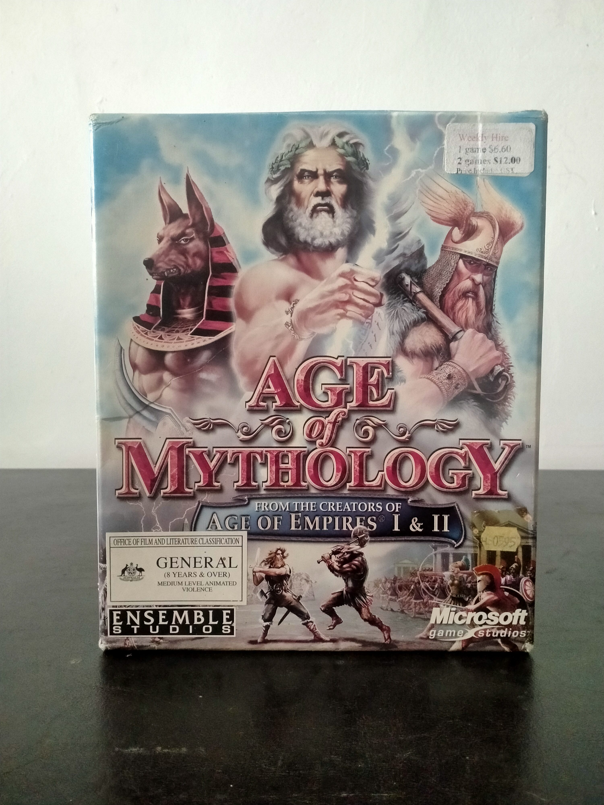

Ficha #000034
Age of Mythology
Age of Mythology es un juego de estrategia en tiempo real desarrollado por Ensemble Studios y publicado por Microsoft Game Studios en 2002. Considerado un derivado directo de la saga Age of Empires, trasladó la fórmula clásica de construcción y conquista hacia un universo basado en mitologías griega, egipcia y nórdica. El título destacó por introducir criaturas mitológicas, poderes divinos y héroes legendarios dentro de una estructura RTS muy refinada, manteniendo al mismo tiempo la profundidad estratégica y económica característica del estudio. Su campaña narrativa, centrada en el personaje de Arkantos, es recordada como una de las más icónicas del género. Esta edición física en formato Big Box incluye doble CD-ROM y diverso material impreso adicional relacionado con tecnologías, poderes y referencias rápidas de juego.
- Formato
- Big Box
- Plataforma
- Win98 WinXP
- Género
- Estrategia en tiempo real RTS Fantasía mitológica Estrategia histórica
- Serie
- Todos Big Box
- Desarrollador
- Ensemble Studios
- Distribuidor
- Microsoft Game Studios
- EAN
- —
Contenido de la edición
- 2 CD-ROM
- Manual
- Caja Big Box
- Tarjeta de referencia
- Árbol tecnológico
- Documentación
Preservación
- Protección
- Verificación de CD
- Formato recomendado
- BIN/CUE
- Jugable en virtualización
- Sí
El juego puede preservarse mediante imágenes BIN/CUE o ISO de los discos originales y ejecutarse en sistemas virtualizados compatibles con Windows de principios de los años 2000. Requiere verificación de disco para la ejecución original.